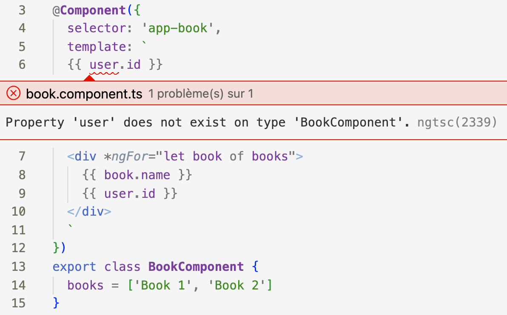
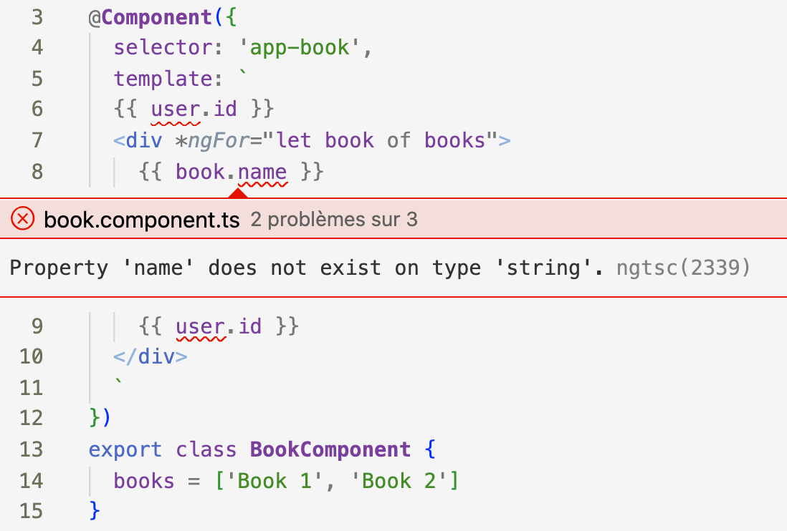

TypeScript offre de nombreuses configurations pour contrôler le niveau rigueur de la vérification de type.
L'un des configurations le plus important est le mode strict qui est se défini comme un ensemble de plusieurs règles.
En suivant la même idée, Angular a également sa panoplie de règles définissable que le compilateur peut suivre.
Historiquement, la plus connue est fullTemplateTypeCheck.
tsconfig.json et passons l'option fullTemplateTypeCheck à false.
"angularCompilerOptions": {
"fullTemplateTypeCheck": false
}Avec le mode basique, seule la vérification de l'existence des membres de la classe en dehors des directives de structure est vérifiée.
Si on omet le premier élément p Angular peut construire l'application avec tout le code dans la directive NgFor sachant que :
books n'ont pas de propriété name ;user n'est pas membre de la classe.Maintenant si on passe fullTemplateTypeCheck à true :
L'erreur de l'objet user est remontée. Cependant, la ligne 7 reste valide.
Depuis Angular 9 avec la sortie du nouveau moteur de rendu Ivy on a eu droit à un nouvelle option : strictTemplates.
Cette règle vient remplacer fullTemplateTypeCheck en important tous ces avantages et bien plus.
"angularCompilerOptions": {
"strictTemplates": true
}fullTemplateTypeCheckest dépréciée à partir de la version 13 et peut donc être supprimée.

Désormais, le type des éléments du tableau books est correctement déduit sur la directive de structure NgFor.
Comme dit plus haut, strictTemplates est un ensemble de règles, soit chaque règle peut être activé ou non indépendamment.
Par exemple, parmis ces règles : strictInputTypes qui est définie par défaut à true dans strictTemplates
mais on peut le modifié manuellement.
Si strictInputTypes est true (sa valeur par défaut dans strictTemplates) :
Ici on essaie de passer en binding une valeur de type nombre, le chiffre 18, alors que le composant
BookComponent attend une chaîne de caractères.
Angular a été longtemps critiqué sur l'absence de cohérence des types entre le contrôleur et le template mais ceci a été largement amélioré depuis la version 9 et la core team Angular continue à chercher à étendre le diagnostique des types.